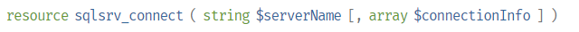
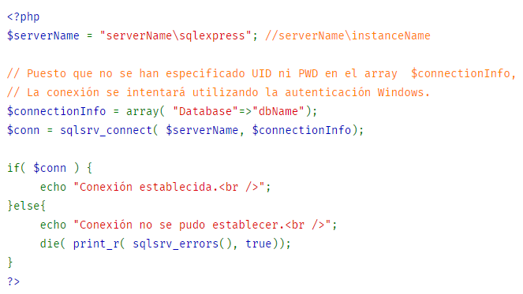
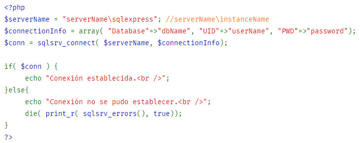
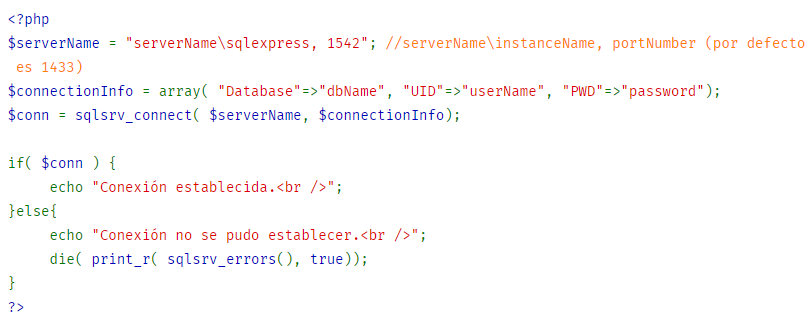

sqlsvr_connect
sqlsrv_connect - Abre conexion con base de datos Microsoft SQL Server
Descripción

Abre una conexión a una base de datos Microsoft SQL Server. Por defecto, la conexión se intenta utilizando la autenticación Windows. Para conectar utilizando la autenticación SQL Server, incluir "UID" y "PWD" en el array de opciones de conexión.
Parametros
serverName:
El nombre del servidor en el que se ha establecido una conexión. Para conectar a una instancia específica, poner una barra invertida después del nombre de servidor e indicar el nombre de la instancia (e.g. NombreServidor\sqlexpress).
connectionInfo
Un array asociativo que especifica las opciones de conexión al servidor. Si no se ha especificado ningún valor para el UID y PWD, la conexión se intentará utilizando la autenticación Windows. Para una lista completa de claves soportadas, ver » Opciones de Conexión SQLSRV.
Valores Devueltos
Un recurso de conexión. Si no se puede abrir la conexión, se retorna el valor
FALSE.
Ejemplos:
Ejemplo #1 Conectar utilizando autenticación Windows.

Ejemplo #2 Conectar especificando nombre de usuario y contraseña.

Ejemplo #3 Conectar a un puerto específico.
